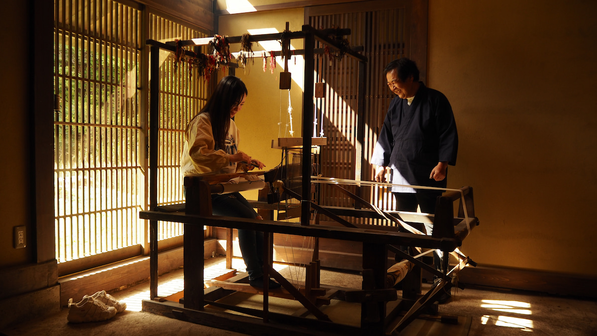

ギャラリssdaー
体験者様の作品です。


×

多彩なコースをご用意しております。お好みのコースをお選びのうえ、ご予約ください。
Tシャツの藍染と囲炉裏で郷土食作りの体験ができます。長野県の郷土食「五平餅」か佐久の郷土食「こねつけ」からお選びいただけます。
佐久市に伝わる機織りと郷土食作り体験ができます。長野県の郷土食「五平餅」か佐久の郷土食「こねつけ」からお選びいただけます。
「空つなぐ」は長野県佐久地域に伝わる手仕事や郷土食を後世につないでいきたいという思いで始めました。晴天率が日本一といわれる佐久市の青空のもと、体験することで地域の魅力や手仕事の楽しさを感じていただければ幸いです。
また「つなぐ」には人と人のつながりを大切にしたいという思いもあります。人との関わりが少ない現代社会だからこそあえて、精一杯のおもてなしで、貴重な思い出になってほしいという思いで関わらせていただきます。
体験者様の作品です。
文化体験に参加されたお客様からの実際の声
「機織りの音が心地よくて、夢中になってしまいました。伝統的な機械を使わせてもらえて、特別な時間でした。」

「囲炉裏で作った五平餅がすごく美味しかったです。藍染めもできて、充実した一日になりました。家族にもおすすめしたい体験です。」

「薪割りから始まる竈ごはん体験、すごく新鮮でした！自分で炊いたごはんがこんなに美味しいなんてびっくりです。」

こちらで解決しなければ予約ページからお問い合わせください
3歳以上のお子様からご参加いただけますが、囲炉裏や竈など火を取り扱います。また近くに川もありますので、保護者様の責任の下、十分にご注意頂きご参加ください。また薪割り体験は小学生以上となります。
今後クレジットカードを導入する予定ですが、現在のところ現金（当日）もしくは銀行振込み（前払い）でお支払いをお願いいたします。
予約の変更は1週間前までは可能です。1週間を切りますと材料の準備などもございますので、材料費分キャンセル料でお振込みして頂くことがございますのでまずはご連絡ください。
追加料金で以下のアイテムをお選びいただけます。手ぬぐい 1000円、ティッシュカバー 1800円、Tシャツ 4000円、レーヨンのストール(150cm) 5000円、レーヨンのタペストリー(150cm) 5000円、トートバッグ 3000円、夏限定(7月中旬から9月末)シルクのスカーフ 13000円
同日に他のお客様を含めて合計で4人以上になれば催行できますのでまずはご相談ください！
体験内容にもよります。まずはご相談ください！
私たちの文化体験について
消毒やマムシ除けの効用があるとされた藍染めは、古くから旅人に重宝されてきました。佐久市岩村田宿でも藍染めを扱う紺屋が何軒もあり、藍の文化が息づいていました。渋沢栄一も青年時代、家業の藍玉販売で何度も訪れたと伝えられています。つたやでは、自家製すくもを使った割り建て染め体験ができ、自分だけの模様を楽しめます。夏には、畑で育てた藍の葉を使った生葉染め体験も開催しています。
詳細はこちら明治から昭和初期にかけて、養蚕が盛んだった佐久市。農家のお母さんたちは売り物にならない繭から糸を紡ぎ、家族のために着物を織っていました。この家族のための織物は「うちおり」と呼ばれ、機織りは嫁入りの条件とされるほど大切にされていました。現在ではその技を継ぐ人も少なくなっています。つたやでは、この貴重な文化を残すべく、機織り体験を提供しています。思い出の布を使って、新たな一枚に生まれ変わらせてみてください。
詳細はこちら伝統文化体験の宿つたやは、古民家を一棟まるごと貸し切ることができる宿です。佐久市岩村田宿で呉服屋を営んでいた岩崎呉服店を移築し、当時の趣を残しながら丁寧にリノベーションしました。館内に足を踏み入れると、110年前の暮らしがそのまま感じられます。藍染や機織り、囲炉裏や竈体験、そして猟師のオーナーと楽しむジビエ料理など、ここでしか味わえない特別な時間をお過ごしいただけます。
詳細はこちら体験のご予約やご希望など、気になることがあればどうぞお気軽にご連絡ください。あなただけの特別な時間を、一緒にお手伝いします。
〒385-0031 長野県佐久市内山148-1
伝統文化体験の宿（つたや）
佐久市へは都心から電車で約1時間15分、
車で約2時間30分。最寄りは佐久平駅と佐久インター。
soratunagu@gmail.com
月曜〜土曜：9:00〜18:00
日曜：10:00〜16:00
空つなぐと、つながろう！！
私たちの日々の風景や体験のひとこまを、SNSでお届けしています。最新情報や、季節のうつろい、特別なご案内もお見逃しなく。
ハッシュタグ #空つなぐ ゲストのみなさんの素敵な思い出もぜひご覧ください。